DOT-Domain model
DOT-Domain is the persistence-neutral Java library that defines the portable
DOT aggregate and its validation rules. It contains no application, web, or
storage-adapter layer.
Aggregate overview
Read the diagram from Dot down to a deployment’s logical services. It shows
the main relationships without the configuration and validation details below.

Diamonds indicate embedded values; arrows indicate declarations or references.
The dashed arrow applies to Contract-backed Anchors. Collection sizes,
configuration, ports, binding helpers and audit metadata are omitted for
readability; see the full generated class diagram
for implementation detail. Composition is a separate DOT-Domain aggregate:
its instances reference DOTs and its Wires reference their Anchors. Neither is
embedded in the reusable Java Dot aggregate.
| Type | Responsibility |
|---|---|
|
Aggregate root: identity, version, description, classification groups, metadata, Skills, Contracts, Anchors, and Runtimes. |
|
Standalone human-readable capability description. |
|
Separate aggregate: pinned DOT instances, Anchor Wires, exposed Anchors, deployment inputs, Secret references and active probe expectations. |
|
Standalone authoritative OpenAPI, AsyncAPI, Protobuf, or GraphQL document. |
|
Embedded stable logical point through which the DOT participates in composition. |
|
A target |
|
Stable deployment ID, one polymorphic manifest, and the logical services it materializes. |
|
Service identity, host, named ports, Contract references, Anchor bindings, and its supported configuration surface. |
Dot, Skill, Contract, and Composition are independently identified domain entities.
Other types are embedded values owned by these aggregates. The module carries no database
or ORM annotations; persistence is an adapter concern.
Complete Mermaid model reference for deliverables
The A4 landscape reference sheet combines a readable core class diagram with an inventory of every exported public model type (77 in this source revision). Scalars, generated accessors and validation implementation helpers are omitted. Supporting types are listed by their nearest core-model family, not presented as exclusively owned values, extra aggregates or guaranteed runtime features. Shared types are listed once.

The complete vector diagram
shows all 77 public classes/enums and their relationships individually.
Both the compact Mermaid source
and complete Mermaid source
come from the existing Java-generated diagram and exported schema inventory.
The DOT-Domain README renders them natively and includes a schema/semantically
validated, compact Prometheus dot.json projection using the real catalogue
Contract and deployment, rather than another product descriptor.

After an intentional model/catalogue documentation change, run
task docs:domain:generate from DOT-Design with the source-built CLI installed.
task docs:domain:check verifies source/output drift and the exact JSON example
offline; it is part of task testing:models, not a live deployment test.
One model authority
DOT-Domain defines all portable models, including Composition, not just
Dot. The existing Victools build generates Schema/schema.json for DOTs,
Schema/composition-v1.schema.json for Composition v1, and standalone
Schema/models/*.schema.json files for every public domain data class and enum.
Jackson reference views remain intentional: a Skill reference containing only
id is not the full standalone Skill entity.
The CLI consumes generated Go input types and embeds the generated Composition schema. It does not require Java at runtime. From DOT-Design, regenerate with:
mvn -pl DOT-Domain process-test-classes
task cli:domain:generateNever edit generated files manually. task testing:composition:model checks
generation drift and v1 compatibility after the Contract validator bootstrap.
Composition references reusable DOTs; it neither inherits from Dot nor
copies its runtimes or Contracts. Resolved execution details, lock digests,
private lifecycle state, endpoint allocation and runtime policy enforcement
remain CLI/executor concerns. Standard Jakarta constraints and Jackson shape
annotations describe fields; model-owned JSON Schema annotations express
conditional input rules such as exactly one literal value or Secret reference.
Jakarta validation also checks the exclusive environment, workload, probe and
gRPC request choices, and the fields allowed for each materializer destination.
Cross-DOT resolution, secret authorization and ownership checks still run in
the CLI after schema validation.
This migration preserves dot.mare6g.eu/v1, existing documents and reviewed
locks. Composition version and dotVersion retain the existing v1 string
semantics; they have not silently become stricter Java Version fields.
Domain stabilization
The immediate priority is a model compatibility freeze, before further CLI
authoring features. Preserve valid Composition v1 JSON and reviewed locks while
allowing targeted Java API improvements. Probe and materializer selections use
typed Java enums: AsyncAPIProtocol, GraphQLTransport, GRPCResponseMatch,
MaterializerType, and MaterializerValueFrom. Existing wire values remain
unchanged and exact, for example MQTT, SSE, and CONFIG_FILE.
AsyncAPIProbe probe = AsyncAPIProbe.builder()
.protocol(AsyncAPIProtocol.MQTT)
.correlationPointer("/id")
.build();This constructs a declaration, not a broker connection or successful delivery
probe. Validate Java objects with Jakarta Bean Validation and raw input with the
generated schema. Raw-input validation must precede deserialization when
required-property presence matters: defaulted Java fields cannot distinguish an
omitted required property from an explicitly supplied default. Optional empty
Java Wire collections serialize as absent; explicit empty JSON collections
remain invalid where the schema requires a nonempty value. Materializer target
pointers such as /routes/0/uri remain accepted without rewriting.
The Java build enforces 100% instruction and branch coverage. Compatibility tests compare generated schemas to the frozen v1 oracle, including existing composition inputs and all 128 materializer field combinations. These checks do not establish independent adoption or live producer acceptance.
The freeze is not complete yet. A reviewed source corpus now covers all 77 exported public model schemas. Publishing the compatibility baseline and the final cross-model invariant review remain release gates.
The service-configuration audit now rejects duplicate environment/CDI names, configuration-file paths, and volume names/target paths within one service. Distinct services keep separate scopes, so the same key may occur in both. Declarations retain their order and are never silently collapsed. Java and installed-CLI tests share the same positive/negative corpus. These are semantic checks: standard JSON Schema cannot express uniqueness by one property of an array item. The generated JSON shapes and reviewed composition locks remain unchanged; use full DOT validation rather than schema-only acceptance. Resolve these in DOT-Domain and its existing generation pipeline, not in independent CLI models. No final stable-model claim or new release is implied.
Deployment-free model gate
task testing:modelsThis sequential, fail-fast local gate runs Java tests and coverage, shared positive/negative examples and serialized Java/schema agreement, generated Go drift checks, CLI race tests and coverage, offline catalogue validation and reviewed locks. Every exported model needs reviewed examples; all enum values and registered manifest subtypes are covered. This is a baseline, not an exhaustive proof of every field combination.
No deployment, runtime startup or GitHub workflow dispatch occurs. Contributor
toolchains are required; initial bootstrap may download pinned validation tools.
Use task ci:live separately for actual adapter/runtime acceptance and
task testing:demo separately for full presenter qualification. A coding-only
push is not a live-runtime qualification or documentation publication.
Optional null manifest/configuration fields serialize as absent, not
schema-invalid JSON nulls; JSON assertions intentionally retain equals: null.
OCI capabilities/host namespaces reject duplicates before Set conversion.
Java callers of their previous Set-specific setters must recompile. Generated
schemas now retain existing Java patterns for Helm repositories and WASM module
references/digests, rejecting malformed inputs earlier without changing valid
document shapes.
Reference-aware validation and collection safety
Anchors use exact DOT-local kebab-case keys such as search-api, not generated
UUIDs for new catalogue entries. Anchor.ID_PATTERN is shared by the Java
definition, service bindings and composition references and exported to the
generated schemas/Go inputs. A wire’s instance identifies the owning DOT, so
two different DOTs may reuse the same local key. Display labels and operation
selectors remain separate and never act as lookup aliases.
Legacy UUID strings remain readable when explicitly declared. These three
Java properties now use String; recompile callers and convert old UUID
arguments explicitly. Composition ownership UUIDs are unchanged. Catalogue
migration updates references and reviewed locks together, not private live state.
Use ordinary validator.validate(dot) to cascade validation. ID-only Skill and
service Contract views use the portable Jakarta IdentityReference group;
ignored entity metadata is not validated as a complete declaration. Validating
a standalone Skill or Contract still requires a full entity. Root Contracts
use the ContractDeclaration group, admitting either a complete declaration
with validated payload/version or the existing ID-only migration reference.
Partial declarations fail. Serializing a root ID-only reference does not add
the Java default version to its JSON.
Service Contract references must identify a root declaration or an explicitly sourced external Anchor Contract. A different release or similar name is not an alias. The model does no catalogue or network I/O: Skill existence, verified Contract assets and operation resolution remain CLI/resolver checks.
| Scope | Unique keys |
|---|---|
Runtime |
Deployment IDs |
Deployment |
Service IDs |
Service |
Port names |
DOT |
Root Contract IDs and Anchor IDs |
Composition |
Instance names, Contract-input IDs, wire names, exposed-Anchor names |
Jackson’s Deployment.setServices(Collection<DeploymentService>) rejects
duplicate service IDs before constructing its ordered Set; it never silently
chooses one conflicting service. Recompile Java callers of the former
Set-specific setter. Validation also rechecks keys after in-place ID mutation.
The CLI applies the corresponding semantic checks to raw definitions and emits
field locations without copying the portable models into handwritten Go types.
Dependencies, security scopes, CDI bindings and OCI grants retain their existing
v1 uniqueItems constraints, now checked in Java lists too. Generated schemas
also retain their annotated item-level nonempty-string/capability constraints.
The portable @UniqueElements constraint drives both Jakarta validation and
the shared Victools schema module; there is no separate hand-maintained list
of unique fields.
No blanket deduplication or reordering applies to arbitrary lists. Missing
required values and null nested entries produce validation violations rather
than aggregate-traversal exceptions. Validate raw required-property presence
before deserialization, as described above.
Optional null Dot/Skill fields serialize as absent, not schema-invalid nulls.
Shared golden examples run through both Java round trips and generated-schema
validation. The broader optional-value serialization audit remains open.
Identity, versioning, and references
Dot, Skill, and Contract use case-sensitive textual IDs. The catalogue uses
Prometheus@3.15.1, Metrics-Scraping, and Prometheus@3.15.1::OpenAPI::HTTP,
respectively. DOT IDs follow <name>@<version> using the actual tool release;
Contract IDs follow <origin-DOT.id>::<standard>::<name>. The local Contract name
is HTTP in this example. Consumers retain the originating identity, even when
their own DOT has a different name or version. Contract standard versions and chart
packaging versions are independent. IDs are explicit keys, not download URLs or
filesystem paths. Existing UUID-shaped strings remain accepted, without
implicit aliases to migrated entries. Anchor IDs are DOT-local kebab-case;
Composition identities remain UUIDs. IDs are not URLs. The catalogue naming convention requires an explicit
identity/reference update when changing a DOT name or tool release;
mutating a Java object’s fields does not silently regenerate its ID.
Equality for Dot, Skill, Contract, and Composition is
ID-based so changes to mutable metadata or collections do not destabilize sets
or persistence identity.
Every DOT must reference at least one meaningful Skill. The catalogue’s
capability assets resolve through Skills/. Prometheus, for example, contains:
"skills": [{"id": "Metrics-Scraping"}, {"id": "Observability"}]dotx repository inspect <id>@<version> --repository DOT-Repository --json
resolves those IDs to the authoritative labels, descriptions and
Monitoring-and-Analysis category. References require the exact ID; search
filters may additionally match a name case-insensitively. A display-label change
never implicitly changes identity. See the catalogue’s IDENTIFIER-MIGRATION.md
for the completed DOT/Contract migration and safe lock/state handling.
Version accepts Semantic Versioning 2.0.0 values and the special latest
selector. It serializes as a string and implements SemVer precedence; latest
sorts after concrete versions. A new Dot defaults to 0.0.0,
while Platform.version defaults to latest so no platform-specific release is
implied.
Contract.version is a standard-specific string, not a software/API release:
OpenAPI and AsyncAPI copy their exact top-level openapi/asyncapi version;
Protobuf uses the native syntax/edition value (implicit proto2 when absent).
GraphQL SDL declares no version, so that field is omitted. There is no default
or placeholder Contract version. info.version remains unchanged inside the
upstream payload. dotx validate, composition loading and URL authoring reject
mismatches even when the declared number is otherwise well formed.
JSON serializes Dot.skills and DeploymentService.contracts as ID-only
references. Root Dot.contracts carries authoritative Contract declarations:
identity, standard, format, and a structured payload with an HTTPS url and
sha256 pin. Raw API documents are not embedded in dot.json.
Current catalogue roots must carry complete declarations; CLI validation rejects
ID-only roots instead of searching local or sibling files. Verified bytes are
cached outside the DOT; cold offline validation fails until warmed online. An Anchor references the root declaration by Contract ID and selector.
dotx validate enforces catalogue identity uniqueness, including DOT
(id, version) and (name, version), and rejects conflicting documents for one
Contract ID across bundles. These catalogue rules are not database indexes
or persistence requirements enforced by the Java entities.
Contracts
Contract standard accepts only the canonical JSON spellings OpenAPI,
AsyncAPI, Protobuf, and GraphQL. Uppercase enum names, alternative casing,
and surrounding whitespace are rejected. The Java enum constants remain
uppercase; Jackson serialization and the generated JSON Schemas use their
canonical values. DataFormat is a separate enum and is unchanged.
| Standard | Payload format | Anchor selector |
|---|---|---|
|
|
RFC 6901 URI-fragment JSON Pointer to an Operation Object |
|
|
RFC 6901 URI-fragment JSON Pointer to an Operation Object |
|
|
Fully qualified service method |
|
|
Root-field schema coordinate |
Contract.isFormatCompatibleWithStandard() rejects mismatched standard/format
pairs. Payload parsing and selected-element existence are resolver concerns;
the domain model validates selector syntax and references within the aggregate.
Anchors and bindings
A contract-backed Anchor contains:
-
a stable DOT-local ID and a separate display name;
-
a
PROVIDESorREQUIRESrole; -
optional semantic-type URIs; and
-
a Contract ID plus standard-specific selector.
It omits direction, protocol, and media type because those facts come from the
selected Contract operation. A contractless Anchor must declare direction, at
least one protocol, and at least one media type explicitly.
DeploymentService.anchorBindings maps an exact Anchor ID to a named ServicePort
on that same service. An Anchor contains no host, numeric port, credential,
placement, or live policy state.
The class-level @ValidAnchor constraint delegates cross-reference validation
to AnchorValidator. It rejects:
-
duplicate Anchor IDs within one DOT;
-
Contract references not declared by the same DOT;
-
selectors invalid for the referenced Contract standard;
-
bindings to undeclared Anchors;
-
bindings to port names absent from that service; and
-
duplicate bindings of one Anchor within the same service.
See DOT Anchors and Composition for authoring and wiring examples.
Runtime two-layer model
Runtime separates infrastructure from deployment mechanism:
| Enum | Used by | Answers |
|---|---|---|
|
|
Where the workload runs: |
|
|
How it is deployed: Docker image, Docker Compose, Kubernetes manifest, Helm chart, Vagrantfile, or WASM module. |
Every DeploymentManifestType declares its required PlatformEngine.
Runtime.isDeploymentPlatformAligned() validates every deployment against the
runtime platform. Runtime.isDeploymentIdsUnique() enforces stable deployment
selection within that runtime.
Deployment.services is a set. DeploymentService uses ID-based equality, so
logical service IDs remain unique within the deployment.
Deployment manifests
DeploymentManifest is polymorphic JSON dispatched by its existing type
property.
| Type | Java subtype | Important fields |
|---|---|---|
|
|
Image reference and ordered dotenv payloads |
|
|
Complete YAML/JSON payload and ordered dotenv payloads |
|
|
Complete YAML/JSON manifest payload |
|
|
Repository, chart or OCI reference, version, and ordered values payloads |
|
|
Complete Ruby DSL payload |
|
|
Relative/file or HTTPS module URI, WASI execution world, command arguments, and required SHA-256 integrity pin |
Docker Compose and Kubernetes manifest payloads accept YAML or JSON only. Helm
values also preserve YAML/JSON order: later entries override earlier entries as
with repeated Helm -f arguments.
Runtime instance concerns do not belong in a manifest. For example, a Helm
release name and namespace are selected by deployment tooling, not embedded in
HelmChart.
Service configuration declarations
Every DeploymentService owns one DeploymentConfig containing:
-
environment variables, including default, required, and sensitive metadata;
-
configuration-file paths, content type, defaults, and sensitivity;
-
logical volume mounts;
-
logical CNCF CDI device requirements; and
-
optional OCI capability and host-namespace requirements.
These are supported inputs and requirements, not applied runtime state. Operator values, host paths, concrete CDI device names, and permission grants belong to deployment or composition input.
OCI requirements use standard CAP_* capability names and typed Linux
namespaces. The model deliberately has no unrestricted privileged flag.
A CDI requirement declares a stable logical name and a
vendor.example/class kind. A composition binds it to one exact
vendor.example/class=device identifier. CDI installation, allocation, and
authorization remain operator responsibilities.
Serialization and persistence adapters
-
Collections have initialized builder defaults and do not become
nullwhen constructed through Lombok builders. -
Versionis JSON-serialized as a normalized string. -
Persistence adapters must preserve UUID, textual identifier and version representations.
-
Skill and service-level Contract references expose only
id; rootDot.contractscontains authoritative declarations or verified local transition references, as described above. -
Domain values carry no database or ORM annotations.
Class diagram
The diagram is generated from current domain sources during the
DOT-Domain build. Open it separately for the full-resolution view.
Build and test
# Unit tests only; no service or database required
mvn -pl DOT-Domain test
# Regenerate schema and diagram through the reactor lifecycle
mvn -pl DOT-Domain clean installRepresentative tests cover version precedence, reference serialization, manifest polymorphism, runtime/manifest alignment, deployment configuration, Anchor rules, and entity equality.